ファンタジスタにはなれなかったよ、と彼は言った [梅吉]
ゆきちさんちで開幕したこてつくんのアイスサッカー。
製氷庫をがさがさすると飛んでくる梅吉なのでこれは喜ぶに違いない！
と、我が家ではバスタブをピッチに開催するとこにしました＾＾
こてつくんとイニエスタも驚く梅吉のファンタジスタぶりをご覧くださいませ。
（45秒 オチなしです）
・・・・・・・・・・・・(^▽^;)
華麗なドリブルとは程遠くなんだか泥臭い感じですw
梅吉の心情を言葉にすると
という感じでしょうか。
氷に「かっ！！」と飛びつく様は猟犬！？
どうやら梅吉はアスリートよりはハンター気質な様です(*>艸<)
漢、梅吉は蓑笠つけたマタギのおっちゃんの後ろが似合うかもねーwww
華麗なドリブルを披露できずに夜空を見つめてたそがれる梅吉。
（なおタイトルは片岡義男イメージでお読みいただけると嬉しゅうございます(〃▽〃)）
お魚が好きだよ！ [梅吉]


おもちゃじゃないおもちゃ２ [梅吉]
ながーいフォークはどこのおうちにでもあるものではありませんが
これならどこのおうちにもある。
たとえ今はなくてもそのうち必ず手に入るはず。

ティッシュボックスのフタ部分！
観音開きの扉の隙間にセットすると、狙ってます狙ってます！

あむっ！として
ゲットー！！
![[猫]](https://blog.ss-blog.jp/_images_e/101.gif) わし やった
わし やった![[手（チョキ）]](https://blog.ss-blog.jp/_images_e/87.gif)

挟んでは落とし、挟んでは落としの無限ループ。
最後は付き合いきれなくて飼い主がギブアップです(^▽^;)
催促するように扉をひっかく梅吉さんw
たのしー♪♬
皆様も試してみてはいかがでしょうか＾＾
 ↑ガブッと一押し↑
↑ガブッと一押し↑
これならどこのおうちにもある。
たとえ今はなくてもそのうち必ず手に入るはず。

ティッシュボックスのフタ部分！
観音開きの扉の隙間にセットすると、狙ってます狙ってます！

あむっ！として
ゲットー！！

挟んでは落とし、挟んでは落としの無限ループ。
最後は付き合いきれなくて飼い主がギブアップです(^▽^;)
催促するように扉をひっかく梅吉さんw
皆様も試してみてはいかがでしょうか＾＾
放熱の決め手はあし？ [梅吉]
蒸し蒸しと暑い日が何日か続きましたねー。
かと思えば夜寒いくらいの日もあり。
一転今日はカラリと過ごしやすい。
気象の変化に対応するのが大変ですw
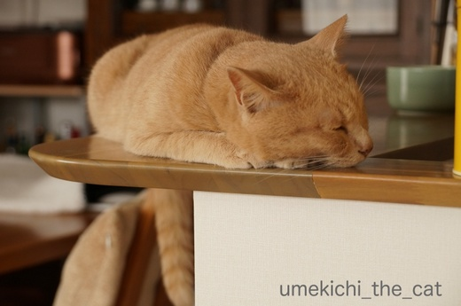
蒸し蒸しと暑かった日（氷遊びをした日でもあります）
梅吉さんの寝場所が変わりました。
このキッチンカウンターに寝るようになると夏だなって感じます。
風の通り道であり板のひんやりした感覚も楽しめる快適な場所のようですよ＾＾
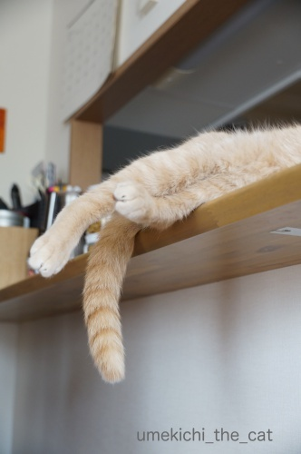
この場所ではあしを投げ出すのがお約束です。
不安定なんじゃないか、と思うのですがそうでもないらしいw
通るたびにあしをにぎにぎしちゃいますＯ(≧▽≦)Ｏ

冷蔵庫に肉球をくっつけるのも暑い時にしか見られないポーズです。
壁走りならぬ冷蔵庫走り（*>艸<)
大事な肉球、クールダウンしなきゃね。
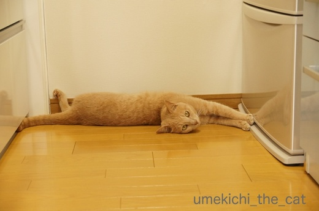
こちらは前あしだけを冷蔵庫にタッチするスタイル。
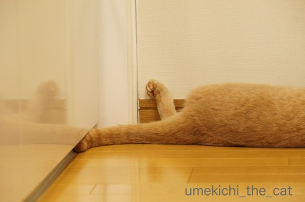
この後ろあちになんの意味があるのかは不明ですが
すっごい萌えポイントーーーー！！！！

冷蔵庫の上は（寒い時期は快適ですが）暑いけど
好きすぎて上がらずにはいられないのでしょう。
で、あしをこのように突き出して温度調節している？？？
キッチンにはいったら突然視界にあしがにょーんと見えて思わず「うわっ！！」と声が出ました (^▽^;)
梅吉はあまりヘソ天はしないのですがだらしなーくあしを投げ出していることがとっても多いです。
梅吉なりの涼の取り方なんでしょうねぇ・・・
↑ガブッと一押し↑
かと思えば夜寒いくらいの日もあり。
一転今日はカラリと過ごしやすい。
気象の変化に対応するのが大変ですw
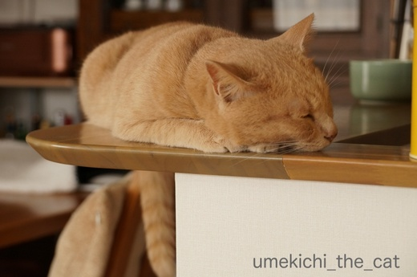
蒸し蒸しと暑かった日（氷遊びをした日でもあります）
梅吉さんの寝場所が変わりました。
このキッチンカウンターに寝るようになると夏だなって感じます。
風の通り道であり板のひんやりした感覚も楽しめる快適な場所のようですよ＾＾
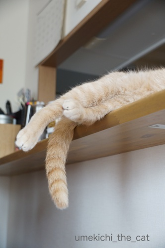
この場所ではあしを投げ出すのがお約束です。
不安定なんじゃないか、と思うのですがそうでもないらしいw
通るたびにあしをにぎにぎしちゃいますＯ(≧▽≦)Ｏ

冷蔵庫に肉球をくっつけるのも暑い時にしか見られないポーズです。
壁走りならぬ冷蔵庫走り（*>艸<)
大事な肉球、クールダウンしなきゃね。
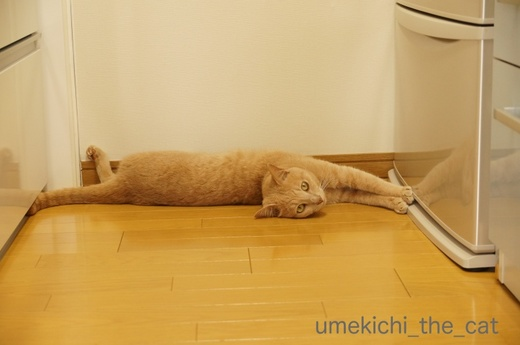
こちらは前あしだけを冷蔵庫にタッチするスタイル。
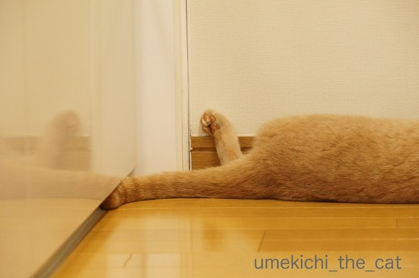
この後ろあちになんの意味があるのかは不明ですが
すっごい萌えポイントーーーー！！！！

冷蔵庫の上は（寒い時期は快適ですが）暑いけど
好きすぎて上がらずにはいられないのでしょう。
で、あしをこのように突き出して温度調節している？？？
キッチンにはいったら突然視界にあしがにょーんと見えて思わず「うわっ！！」と声が出ました (^▽^;)
梅吉はあまりヘソ天はしないのですがだらしなーくあしを投げ出していることがとっても多いです。
梅吉なりの涼の取り方なんでしょうねぇ・・・
冷やっこいのが気持ちいい [梅吉]
蒸し蒸しと暑いですねー。（西日本だけかな？）
梅吉から皆様へ冷やっこいメッセージです(*>艸<)
（1分10秒です。）
オチもなーんにもありませんがひとときの涼をお楽しみくださいませ(^_－)☆
前記事のお返事は後日書かせてくださいね＾＾
皆様良い週末を！
おもちゃじゃないおもちゃ [梅吉]
百均で買ったながーいスプーンとフォークのセット。
スプーンの方はヨーグルトメーカーで作ったヨーグルトを取り出すのに重宝しています。
（付属のものはとっても使いにくかった）
フォークの方は使わないまま半年以上。
ようやく「捨てようかな」と思ったのですが・・・

冷蔵庫の上で寝ていた梅吉さんをツンツンしてみると、釣れた！
すごい食いつき様です。
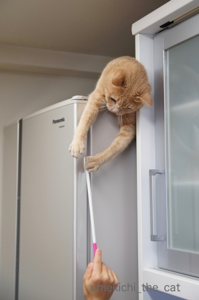
鼻をふんがふんが言わせながら身を乗り出して来ています。
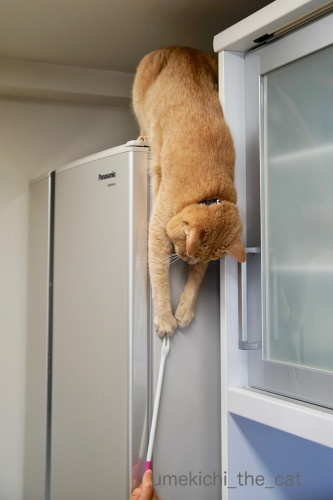
乗り出しすぎー！！
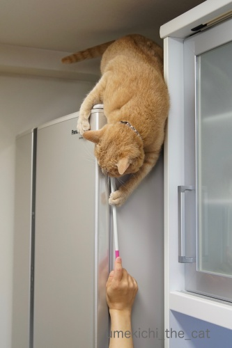
落ちる、落ちる(^▽^;)

でもおでこの気持ち良いポイントをカキカキすると
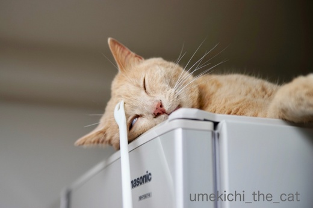
あっという間に白目になりましたよw
おもちゃじゃないのに大変喜んでいただけましたよ。
家事をしていると
なあなあ あれであそんでやー
と催促してくるほどお気に入り。
しかも孫の手的な使い方もできる優良品でございました＾＾
みなさんも「捨てようかな」と思っているもので
にゃんこをツンツンしてみてはいかがでしょうかwww
↑ガブッと一押し↑
スプーンの方はヨーグルトメーカーで作ったヨーグルトを取り出すのに重宝しています。
（付属のものはとっても使いにくかった）
フォークの方は使わないまま半年以上。
ようやく「捨てようかな」と思ったのですが・・・

冷蔵庫の上で寝ていた梅吉さんをツンツンしてみると、釣れた！
すごい食いつき様です。
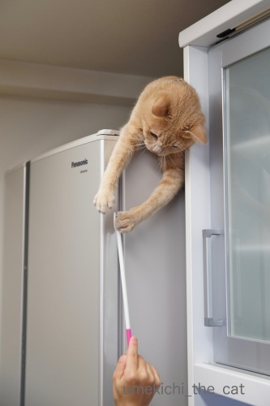
鼻をふんがふんが言わせながら身を乗り出して来ています。
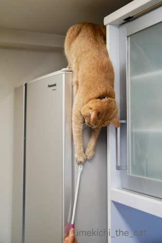
乗り出しすぎー！！
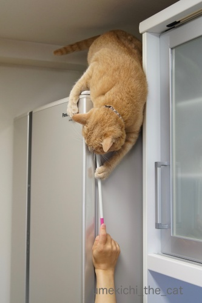
落ちる、落ちる(^▽^;)

でもおでこの気持ち良いポイントをカキカキすると
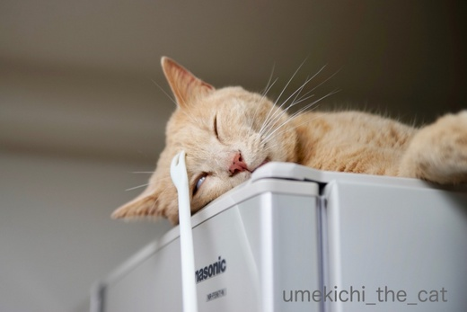
あっという間に白目になりましたよw
おもちゃじゃないのに大変喜んでいただけましたよ。
家事をしていると
と催促してくるほどお気に入り。
しかも孫の手的な使い方もできる優良品でございました＾＾
みなさんも「捨てようかな」と思っているもので
にゃんこをツンツンしてみてはいかがでしょうかwww
米とぎ名人 [梅吉]
お米を研いでいると梅吉さんから厳しく指導が入ります(꒦ິ⌑꒦ີ)
弟子の仕事に不満があるようです。
（８秒です）
もっと ちゃっちゃと とがなあかん
すすぎの時も注意されます(꒦ິ⌑꒦ີ)(꒦ິ⌑꒦ີ)
（８秒です）
わしのてほんを ちゃんとみてんか！！
ことお米に関しては一家言あるのでしょうか・・・
（生米も炊いたお米も好き。あげませんけどw）
弟子は独立させてもらいたいんだけどなーwww
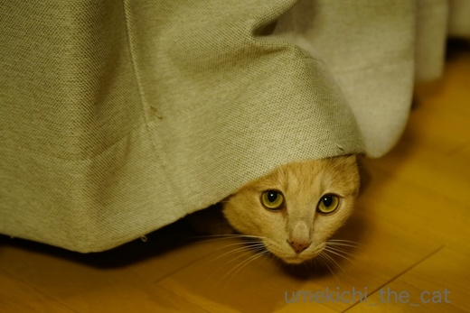
今度はかくれんぼの名人ですか？
（本にゃんは隠れているつもりです(*>艸<)）
↑ガブッと一押し↑
弟子の仕事に不満があるようです。
（８秒です）
すすぎの時も注意されます(꒦ິ⌑꒦ີ)(꒦ິ⌑꒦ີ)
（８秒です）
ことお米に関しては一家言あるのでしょうか・・・
（生米も炊いたお米も好き。あげませんけどw）
弟子は独立させてもらいたいんだけどなーwww
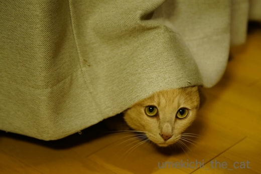
今度はかくれんぼの名人ですか？
（本にゃんは隠れているつもりです(*>艸<)）
雨上がりの風景 [梅吉]
寒い雨が上がってカラッと晴れた日、お部屋で傘を干していたら・・・
（風が強くて外に干せませんでしたwww）
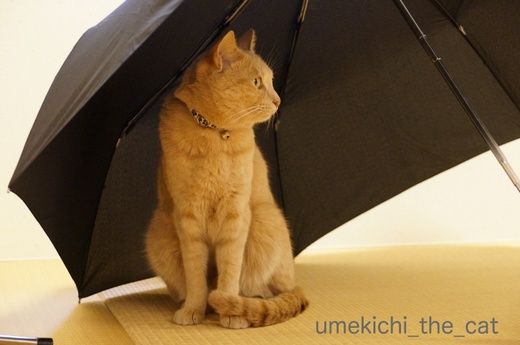
やっぱり来た。
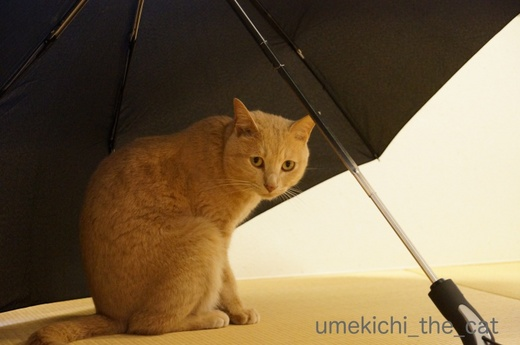
み〜た〜な〜
見てますよ、ついでに写真も撮ってます＾＾

どうして傘を見ると走ってくるんでしょうね、梅吉さんは。
特別なことをするわけじゃなく

お顔を洗ったりいつもとおんなじことするだけなのに。
秘密基地にいるような感覚なのかな？
だったら前々から気になっていたこんなのがあるのですよ。梅吉さん。
喜びそうだなぁ・・・でも場所取りそうだなぁ・・・
きっとがぶがぶして壊すんだろうなぁ・・・
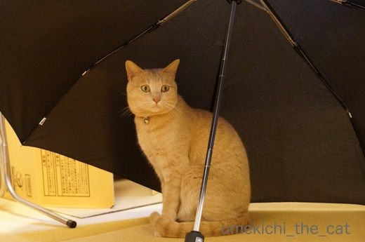
せやで まちがいない わしは きたいにこたえるおとこやからな
ですよねー(꒦ິ⌑꒦ີ)

梅吉のねこ草（燕麦）に小穂が出て来ました。
小穂が燕っぽいので燕麦なんですって。
この状態で小さな花が咲いて実が出来るようです。
このまま育てて種を収穫してみようかな＾＾
ねこ草の種として流通しているものは一世代ものが多くて
こうなるのは珍しいみたいです。
Amazonで買ったものなんですけどね。
↑ガブッと一押し↑
（風が強くて外に干せませんでしたwww）
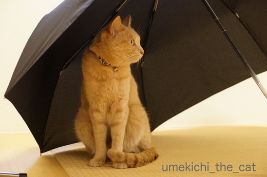
やっぱり来た。
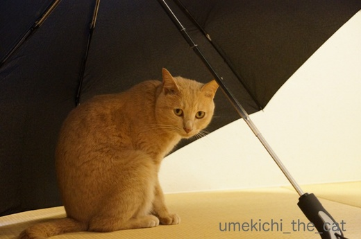
見てますよ、ついでに写真も撮ってます＾＾

どうして傘を見ると走ってくるんでしょうね、梅吉さんは。
特別なことをするわけじゃなく

お顔を洗ったりいつもとおんなじことするだけなのに。
秘密基地にいるような感覚なのかな？
だったら前々から気になっていたこんなのがあるのですよ。梅吉さん。
喜びそうだなぁ・・・でも場所取りそうだなぁ・・・
きっとがぶがぶして壊すんだろうなぁ・・・
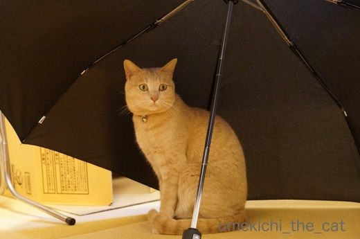
ですよねー(꒦ິ⌑꒦ີ)

梅吉のねこ草（燕麦）に小穂が出て来ました。
小穂が燕っぽいので燕麦なんですって。
この状態で小さな花が咲いて実が出来るようです。
このまま育てて種を収穫してみようかな＾＾
ねこ草の種として流通しているものは一世代ものが多くて
こうなるのは珍しいみたいです。
Amazonで買ったものなんですけどね。
特におでこが好きなんです [梅吉]
にゃんこの皆さんは今が絶賛換毛期ですね＾＾
抜け毛処理とベランダでくりんくるんした後の埃を払うために
梅吉さんにも毎晩ブラシをしています。

ブラシというかクシ。更に言うなら100均のクシ。
中学生の時リーゼント男子がこんなクシを持っていたような・・・

首回りが良い感じですか？
他のブラシ類は一切拒否。ファーミネーターなんてとんでもない。
シンプル・イズ・ベスト、プチプラが梅吉さんのチョイスです(*>艸<)

ここもお好きな箇所ですよねー＾＾

ああ〜![[黒ハート]](https://blog.ss-blog.jp/_images_e/136.gif) たまらんわぁ
たまらんわぁ
せまーい猫の額が特に気持ちが良いようです。
首回り＆顔まわりはもちろん最近は胸やお腹周りもあまり嫌がらなくなりました。
が、おちり付近から表情がきびしくなりおしっぽは逆鱗ポイントですw
たくさん抜けて来るので（短毛種比）ブラシ係もやりがいがありますよ(๑˃̵ᴗ˂̵)و
↑ガブッと一押し↑
抜け毛処理とベランダでくりんくるんした後の埃を払うために
梅吉さんにも毎晩ブラシをしています。

ブラシというかクシ。更に言うなら100均のクシ。
中学生の時リーゼント男子がこんなクシを持っていたような・・・

首回りが良い感じですか？
他のブラシ類は一切拒否。ファーミネーターなんてとんでもない。
シンプル・イズ・ベスト、プチプラが梅吉さんのチョイスです(*>艸<)

ここもお好きな箇所ですよねー＾＾

せまーい猫の額が特に気持ちが良いようです。
首回り＆顔まわりはもちろん最近は胸やお腹周りもあまり嫌がらなくなりました。
が、おちり付近から表情がきびしくなりおしっぽは逆鱗ポイントですw
たくさん抜けて来るので（短毛種比）ブラシ係もやりがいがありますよ(๑˃̵ᴗ˂̵)و


カフェオレ色の梅吉

梅吉 2023年8月10日 永眠


梅吉と出会った譲渡会

犬猫の理由なき殺処分ゼロ
妄想広告
UMEKICHI 光

爆発的に早い！
時々攻撃的！
Thanks to Mr.Boss365
爆発的に早い！
時々攻撃的！
Thanks to Mr.Boss365